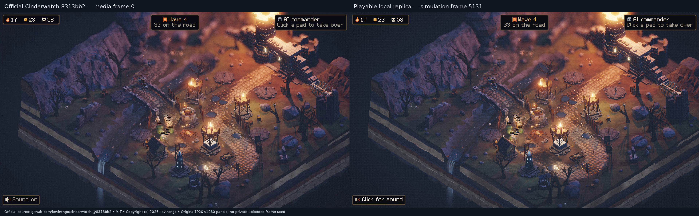
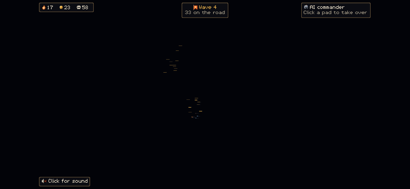
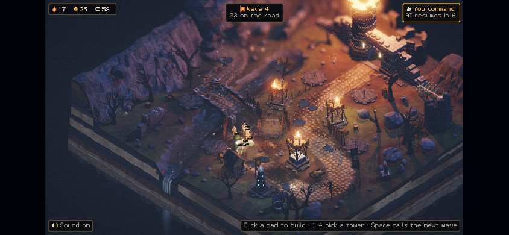

进入实时可操作场景（手机横屏） · 测试报告 · 原作署名与MIT许可
使用 kevintngo 的 Cinderwatch 历史源码8313bb2；seed4，第5131模拟帧。场景和玩法来自原作，本工程负责独立入口、首屏对齐与触控菜单适配。



云Linux软件GPU：Chromium录屏约0.592FPS；WebKit无录屏约3.586FPS。这不是iPhone或微信真机结果，也不代表硬件流畅度已验证。触屏记录 · WebKit记录。
保留凤鸣H36，本入口独立运行。参考后半段有剪辑，实时战局不会按剪辑秒数跳转。未发布私人云盘录像或帧。